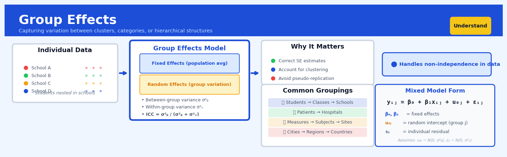

Group Effects#


Group Effects is a core transformation in the Understand workflow.
The 60-Second Version#
What it does: Group Effects tells you whether different categories (regions, customer segments, product lines) produce genuinely different outcomes, or whether apparent differences are just random noise.
When to use it: You have data divided into groups—stores, teams, marketing channels—and you need to know if performance differences between them are real and worth acting on.
What you get back: A statistical verdict on whether groups truly differ, plus a measure of how much of your outcome’s variation comes from group membership versus other factors.
At a Glance
Difficulty |
Easy |
Typical runtime |
Seconds on 100K rows |
What you bring |
One categorical variable (the groups) and one continuous outcome to compare |
What you get |
Significance test results and percentage of variance explained by groups |
Heuristix bucket |
Understand — Statistical Analysis & Profiling |
Group Effects doesn’t tell you which groups differ—only that they differ; identifying specific winners and losers requires follow-up analysis.
Learning Objectives#
After reading this chapter, a business user will be able to:
Identify situations where comparing group means answers the business question, such as evaluating regional performance differences, testing pricing tier effectiveness, or assessing campaign variants.
Interpret ANOVA tables, F-statistics, and R-squared values to explain whether observed differences between groups are meaningful or likely due to chance.
Decide whether to implement differentiated strategies for different segments based on effect size measures that quantify how much group membership actually matters.
After reading this chapter, a data scientist will be able to:
Implement one-way and factorial ANOVA with appropriate assumption checks (normality, homogeneity of variance) and select robust alternatives when assumptions are violated.
Choose between fixed and random effects specifications based on whether groups represent the full population of interest or a sample from a larger universe.
Diagnose common pitfalls including unbalanced designs, Simpson’s paradox in nested groups, and inflated Type I error from multiple comparisons, then apply appropriate corrections.
Overview#
Group Effects analysis quantifies how a categorical grouping variable explains variance in a continuous outcome, decomposing total variation into between-group and within-group components. This technique belongs to the family of Analysis of Variance (ANOVA) methods and serves as the foundation for understanding systematic differences across segments, cohorts, or categories in business data. Group Effects provides both statistical inference (testing whether groups differ significantly) and effect size estimation (measuring how much of the outcome’s variability is attributable to group membership).
When to Use This#
Use this when you need to determine whether customer segments (e.g., acquisition channel, loyalty tier) exhibit genuinely different behaviours in a metric like average order value, and you want to quantify the magnitude of those differences.
Use this when comparing performance across multiple treatment conditions in an A/B/n test where you have more than two variants and need a single omnibus test before conducting pairwise comparisons.
Use this when investigating whether regional differences in sales performance are statistically meaningful or could plausibly arise from random variation alone.
Use this when you want to understand what proportion of variance in a KPI (e.g., customer lifetime value) can be explained by a categorical factor (e.g., product category first purchased) versus residual individual-level noise.
Use this when building intuition about feature importance before constructing predictive models — categorical variables with large group effects are likely to be valuable predictors.
Use this when validating that experimental randomisation worked correctly by checking that pre-treatment covariates show no significant group effects across treatment arms.
Do NOT use this when your outcome variable is categorical or binary — use chi-square tests or logistic regression instead.
Do NOT use this when you have only two groups and a simple t-test would suffice — Group Effects generalises the t-test but adds unnecessary complexity for the two-group case.
Do NOT use this when your grouping variable is ordinal and the ordering matters — consider trend tests or treat the variable as continuous.
Do NOT use this when observations are not independent (e.g., repeated measures on the same individuals) — use repeated-measures ANOVA or mixed-effects models instead.
Questions This Answers#
Performance Diagnosis & Comparison#
Why are our conversion rates so different across the five regional offices — is one team doing something right, or is it just market differences?
Our customer satisfaction scores dropped 12 points this quarter — is this affecting all customer segments equally or just specific groups?
Which sales team is actually delivering the best results when we account for territory size and market maturity?
Are the productivity differences between our day shift and night shift workers statistically meaningful or just normal variation?
Is the 22% higher churn rate in our mobile app users compared to web users something we need to act on, or could it be random?
Resource Allocation & Strategy#
Should we invest differently in our three product lines based on their profit margin performance, or are the differences too small to matter?
We’re seeing a 15% revenue gap between our enterprise and mid-market segments — is this gap large enough to justify separate go-to-market strategies?
Which store format generates the strongest revenue per square foot, and is the difference significant enough to guide our expansion plans?
Are our marketing campaigns performing differently across age demographics, and if so, where should we concentrate our budget?
Operational Decisions#
Do our customers who come through referrals actually have higher lifetime value than paid acquisition channels, or does it just seem that way?
We have four different onboarding processes across regions — are any of them clearly better at reducing time-to-productivity for new hires?
Is there a real quality difference between products manufactured at our three different facilities, or are the complaint rates basically the same?
Should we standardize pricing across all markets, or do the revenue differences between geographic zones justify location-based pricing?
How It Works#
Imagine you manage three coffee shops in different neighborhoods, and you’re trying to understand why daily revenue varies so much. Some days bring \(800, others \)2,200. You suspect location matters, but how much? If you calculate the average revenue for each shop separately, you might find Shop A averages \(1,500, Shop B averages \)1,100, and Shop C averages $1,800. Now here’s the insight: the day-to-day variation within each shop (rainy Tuesdays versus sunny Saturdays) is one type of fluctuation, but the consistent difference between shops is another. Group Effects separates these two sources of variation and tells you what percentage of your revenue swings comes from “which shop it is” versus “random daily noise.”
BEFORE: All Revenue Mixed Together AFTER: Variation Decomposed
Revenue ($) TOTAL VARIATION (100%)
2200 | • ↓
2000 | • • ┌──────┴──────┐
1800 | • • • • │ │
1600 | • • • • BETWEEN WITHIN
1400 | • • • GROUPS GROUPS
1200 | • • (Shop A vs (Daily noise
1000 | • • Shop B vs within each
800 | • Shop C) shop)
└───────────────── 35% 65%
All days jumbled ↑ ↑
Explainable Unexplained
by groups variation
Shop A: ████ R² = 0.35
Shop B: ▓▓▓▓ ("Groups explain
Shop C: ░░░░ 35% of variance")
Step 1: Calculate the grand average. The technique starts by finding the overall mean across all observations, ignoring groups entirely. This is your baseline—what you’d predict if you knew nothing about which group each data point belonged to.
Step 2: Calculate each group’s average. Next, compute the mean for each category separately. These group averages reveal the systematic differences between categories—Shop A’s typical day versus Shop B’s typical day.
Step 3: Measure between-group variation. For each group, calculate how far its average is from the grand average, then sum up these differences across all data points. This captures the variation explained by knowing which group something belongs to—the signal you care about.
Step 4: Measure within-group variation. For each individual observation, calculate how far it is from its own group’s average. Sum these up to capture the leftover noise—the variation that persists even after accounting for group membership. This is the part groups don’t explain.
Step 5: Compare the two sources. Divide the between-group variation by the total variation. This ratio—often called R-squared—tells you what fraction of the outcome’s variability is attributable to group membership. An R-squared of 0.35 means groups explain 35% of the variance.
Step 6: Test statistical significance. Finally, ask whether the between-group differences are larger than you’d expect by random chance. This produces a p-value that tells you if the group effect is real or just statistical noise.
The key insight: Group Effects works by partitioning variance into explainable patterns (systematic differences between categories) and unexplainable noise (random variation within categories), revealing how much predictive power your grouping variable actually holds.
The Intuition#
Imagine you manage a chain of coffee shops across five neighbourhoods. You notice that daily revenue varies considerably from day to day and from location to location. A natural question arises: how much of this variation is due to genuine differences between neighbourhoods (perhaps one is near a university, another in a business district) versus the inherent day-to-day randomness that affects all shops equally? Group Effects analysis answers precisely this question by partitioning the total “spread” in your data into two buckets: the spread between neighbourhood averages and the spread within each neighbourhood around its own average.
The core insight is geometric. Picture each observation as a point in space. The grand mean is the centroid of all points. Each group has its own centroid (the group mean). The total distance of points from the grand mean can be decomposed: part of that distance is explained by how far each group’s centroid sits from the grand mean (the between-group component), and the remainder is explained by how far individual points scatter around their own group’s centroid (the within-group component). If groups are genuinely different, their centroids will be spread out, and the between-group component will be large relative to the within-group scatter.
The statistical test formalises this intuition by asking: if there were truly no difference between groups (i.e., all observations came from the same underlying population), how surprising would it be to see between-group variance this large relative to within-group variance? The F-statistic captures this ratio, and its sampling distribution under the null hypothesis allows us to compute a p-value. But beyond hypothesis testing, the effect size (often reported as \(\eta^2\) or \(\omega^2\)) tells us the practical magnitude: what fraction of total variance does group membership explain? A statistically significant result with \(\eta^2 = 0.01\) means groups differ, but group membership explains only 1% of the outcome — probably not actionable. A result with \(\eta^2 = 0.25\) means group membership explains a quarter of all variation — a substantial finding worth investigating further.
The Mathematics#
Problem Setup and Notation#
Let \(Y_{ij}\) denote the \(j\)-th observation in group \(i\), where \(i = 1, \ldots, k\) indexes the groups and \(j = 1, \ldots, n_i\) indexes observations within group \(i\). The total sample size is \(N = \sum_{i=1}^{k} n_i\).
Define the following quantities:
Group mean: \(\bar{Y}_{i\cdot} = \frac{1}{n_i} \sum_{j=1}^{n_i} Y_{ij}\)
Grand mean: \(\bar{Y}_{\cdot\cdot} = \frac{1}{N} \sum_{i=1}^{k} \sum_{j=1}^{n_i} Y_{ij}\)
The Linear Model#
The one-way ANOVA model expresses each observation as:
where \(\mu\) is the overall population mean, \(\alpha_i\) is the effect of group \(i\) (with the constraint \(\sum_{i=1}^{k} n_i \alpha_i = 0\) for identifiability), and \(\varepsilon_{ij}\) is the random error term.
Assumptions#
The classical ANOVA assumptions are:
Independence: Observations are independent both within and across groups.
Normality: Within each group, \(\varepsilon_{ij} \sim \mathcal{N}(0, \sigma^2)\).
Homoscedasticity: The error variance \(\sigma^2\) is constant across all groups.
Note
ANOVA is robust to moderate violations of normality when sample sizes are reasonably large (by the Central Limit Theorem). Violations of homoscedasticity are more problematic; Welch’s ANOVA provides a robust alternative when group variances differ substantially.
Partitioning of Variance#
The fundamental identity of ANOVA decomposes total variation:
This identity states that the total sum of squares equals the between-group sum of squares plus the within-group sum of squares:
Degrees of Freedom#
The degrees of freedom partition analogously:
\(\text{df}_T = N - 1\) (total)
\(\text{df}_B = k - 1\) (between groups)
\(\text{df}_W = N - k\) (within groups)
Mean Squares and the F-Statistic#
Mean squares are variance estimates obtained by dividing sums of squares by their degrees of freedom:
Under the null hypothesis \(H_0: \alpha_1 = \alpha_2 = \cdots = \alpha_k = 0\) (i.e., all group means are equal), both \(\text{MS}_B\) and \(\text{MS}_W\) are unbiased estimators of \(\sigma^2\). Under the alternative hypothesis where group means differ, \(\text{MS}_B\) is inflated.
The F-statistic is the ratio:
Under \(H_0\), this statistic follows an F-distribution with \((k-1, N-k)\) degrees of freedom:
Effect Size Measures#
The eta-squared (\(\eta^2\)) measures the proportion of total variance explained by group membership:
This is a descriptive statistic for the sample. For population inference, omega-squared (\(\omega^2\)) provides a less biased estimate:
Tip
Cohen’s conventions for \(\eta^2\): small \(\approx 0.01\), medium \(\approx 0.06\), large \(\approx 0.14\). These are rough guidelines; domain context should always inform interpretation.
Relationship to Regression#
One-way ANOVA is equivalent to linear regression with dummy-coded group indicators. If we create \(k-1\) dummy variables \(D_1, \ldots, D_{k-1}\) (with group \(k\) as reference), the model:
yields an F-test for the joint significance of all dummy coefficients that is identical to the ANOVA F-test. The \(R^2\) from this regression equals \(\eta^2\).
Edge Cases and Degenerate Conditions#
Single observation per group (\(n_i = 1\) for all \(i\)): \(\text{SS}_W = 0\), making \(\text{MS}_W\) undefined. The test cannot be performed.
All observations identical within groups: \(\text{SS}_W = 0\), leading to division by zero in the F-statistic.
Single group (\(k = 1\)): No between-group variation exists; the analysis is meaningless.
Severely unbalanced designs: The test remains valid but power decreases, and the assumption of homoscedasticity becomes more critical.
Welch’s ANOVA for Heterogeneous Variances#
When homoscedasticity is violated, Welch’s modification adjusts the F-statistic:
where \(w_i = n_i / s_i^2\), \(s_i^2\) is the sample variance for group \(i\), and \(\tilde{Y} = \sum w_i \bar{Y}_{i\cdot} / \sum w_i\) is the weighted grand mean.
Understanding the Mathematics#
Total Sum of Squares (SST)#
The equation:
Read it aloud:
The total sum of squares equals the sum of all squared differences between each individual observation and the overall mean.
What each symbol means:
\(SST\) = Total Sum of Squares (total variation in the data)
\(\sum\) = “add up everything that follows”
\(n\) = total number of observations
\(y_i\) = the value of observation \(i\) (e.g., revenue for customer \(i\))
\(\bar{y}\) = the overall mean (average of all observations)
\((y_i - \bar{y})^2\) = squared distance between one observation and the mean
A concrete numerical example:
Suppose we have monthly sales revenue (in thousands) from five stores: $120k, $150k, $110k, $140k, $130k. The overall mean is $130k.
For Store 1: \((120 - 130)^2 = (-10)^2 = 100\)
For Store 2: \((150 - 130)^2 = (20)^2 = 400\)
For Store 3: \((110 - 130)^2 = (-20)^2 = 400\)
For Store 4: \((140 - 130)^2 = (10)^2 = 100\)
For Store 5: \((130 - 130)^2 = (0)^2 = 0\)
\(SST = 100 + 400 + 400 + 100 + 0 = 1000\)
Why this equation matters:
SST establishes the baseline—it captures all the variability we need to explain, before we account for any grouping structure.
Between-Group Sum of Squares (SSB)#
The equation:
Read it aloud:
The between-group sum of squares equals the sum across all groups of: the group size times the squared difference between that group’s mean and the overall mean.
What each symbol means:
\(SSB\) = Between-group Sum of Squares (variation explained by groups)
\(k\) = number of groups
\(n_j\) = number of observations in group \(j\)
\(\bar{y}_j\) = mean of group \(j\)
\(\bar{y}\) = overall mean across all observations
A concrete numerical example:
Using the same five stores, suppose Stores 1–2 are in Region A (mean = $135k) and Stores 3–5 are in Region B (mean = $126.67k). Overall mean is $130k.
Region A: \(2 \times (135 - 130)^2 = 2 \times 25 = 50\)
Region B: \(3 \times (126.67 - 130)^2 = 3 \times 11.11 = 33.33\)
\(SSB = 50 + 33.33 = 83.33\)
Why this equation matters:
SSB measures how much of the total variation comes from differences between groups—this is the variation our grouping variable actually explains.
Within-Group Sum of Squares (SSW)#
The equation:
Read it aloud:
The within-group sum of squares equals the sum of squared differences between each observation and its own group’s mean, calculated separately for each group and then added together.
What each symbol means:
\(SSW\) = Within-group Sum of Squares (unexplained variation)
\(y_{ij}\) = observation \(i\) in group \(j\)
\(\bar{y}_j\) = mean of group \(j\)
A concrete numerical example:
Region A: \((120 - 135)^2 + (150 - 135)^2 = 225 + 225 = 450\)
Region B: \((110 - 126.67)^2 + (140 - 126.67)^2 + (130 - 126.67)^2 = 277.89 + 177.78 + 11.11 = 466.78\)
\(SSW = 450 + 466.78 = 916.78\)
Why this equation matters:
SSW represents the leftover variation—what remains unexplained even after accounting for group membership, showing us the limits of our grouping variable’s explanatory power.
R-squared (Coefficient of Determination)#
The equation:
Read it aloud:
R-squared equals the between-group variation divided by total variation, which is equivalent to one minus the within-group variation divided by total variation.
What each symbol means:
\(R^2\) = proportion of variance explained (ranges from 0 to 1)
A concrete numerical example:
Using our store data: \(R^2 = \frac{83.33}{1000} = 0.083\) or 8.3%
This means region explains only 8.3% of the variation in store sales.
Why this equation matters:
R-squared gives us a single, interpretable number that answers the critical business question: “How much does this grouping actually matter?”
The Big Picture#
The mathematics of Group Effects systematically decomposes variation into pieces we can attribute to specific sources. We start with total variation (SST), then partition it into the part explained by group membership (SSB) and the part that remains unexplained (SSW). This additive decomposition—where \(SST = SSB + SSW\) always holds—gives us a precise accounting system for variance. We chose this approach because it provides both a significance test (through the F-statistic) and an effect size measure (R-squared) from the same mathematical framework. In one sentence: we’re asking “how much of the mess in our data gets cleaned up when we sort observations into groups?”
Python Implementation#
import numpy as np
import pandas as pd
from scipy import stats
import statsmodels.api as sm
from statsmodels.formula.api import ols
from statsmodels.stats.anova import anova_lm
from statsmodels.stats.multicomp import pairwise_tukeyhsd
# Set random seed for reproducibility
np.random.seed(42)
# -----------------------------------------------------------------------------
# Example 1: Basic One-Way ANOVA using scipy
# -----------------------------------------------------------------------------
# Simulate customer satisfaction scores across three service channels
n_per_group = 50
# True group means differ: Phone=72, Chat=75, Email=70
phone_scores = np.random.normal(loc=72, scale=10, size=n_per_group)
chat_scores = np.random.normal(loc=75, scale=10, size=n_per_group)
email_scores = np.random.normal(loc=70, scale=10, size=n_per_group)
# Perform one-way ANOVA using scipy
f_statistic, p_value = stats.f_oneway(phone_scores, chat_scores, email_scores)
print("=" * 60)
print("Example 1: Basic One-Way ANOVA (scipy)")
print("=" * 60)
print(f"F-statistic: {f_statistic:.4f}")
print(f"p-value: {p_value:.4f}")
print(f"Conclusion: {'Reject H0 - groups differ' if p_value < 0.05 else 'Fail to reject H0'}")
# -----------------------------------------------------------------------------
# Example 2: Full ANOVA Table using statsmodels
# -----------------------------------------------------------------------------
# Create DataFrame for more detailed analysis
df = pd.DataFrame({
'satisfaction': np.concatenate([phone_scores, chat_scores, email_scores]),
'channel': ['Phone'] * n_per_group + ['Chat'] * n_per_group + ['Email'] * n_per_group
})
# Fit OLS model with categorical predictor
model = ols('satisfaction ~ C(channel)', data=df).fit()
# Generate ANOVA table with Type II sums of squares
anova_table = anova_lm(model, typ=2)
print("\n" + "=" * 60)
print("Example 2: Full ANOVA Table (statsmodels)")
print("=" * 60)
print(anova_table)
# Calculate effect sizes manually
ss_between = anova_table.loc['C(channel)', 'sum_sq']
ss_total = anova_table['sum_sq'].sum()
eta_squared = ss_between / ss_total
# Calculate omega-squared (less biased)
df_between = anova_table.loc['C(channel)', 'df']
ms_within = anova_table.loc['Residual', 'sum_sq'] / anova_table.loc['Residual', 'df']
omega_squared = (ss_between - df_between * ms_within) / (ss_total + ms_within)
print(f"\nEffect Sizes:")
print(f" η² (eta-squared): {eta_squared:.4f}")
print(f" ω² (omega-squared): {omega_squared:.4f}")
print(f" Interpretation: {eta_squared*100:.1f}% of variance explained by channel")
# -----------------------------------------------------------------------------
# Example 3: Post-hoc Pairwise Comparisons (Tukey HSD)
# -----------------------------------------------------------------------------
tukey_results = pairwise_tukeyhsd(df['satisfaction'], df['channel'], alpha=0.05)
print("\n" + "=" * 60)
print("Example 3: Post-hoc Comparisons (Tukey HSD)")
print("=" * 60)
print(tukey_results)
# -----------------------------------------------------------------------------
# Example 4: Welch's ANOVA for Heterogeneous Variances
# -----------------------------------------------------------------------------
# Simulate data with unequal variances across groups
premium_ltv = np.random.normal(loc=5000, scale=500, size=30) # Low variance
standard_ltv = np.random.normal(loc=3000, scale=1500, size=100) # High variance
basic_ltv = np.random.normal(loc=1000, scale=800, size=200) # Medium variance
# Levene's test for homogeneity of variances
levene_stat, levene_p = stats.levene(premium_ltv, standard_ltv, basic_ltv)
print("\n" + "=" * 60)
print("Example 4: Welch's ANOVA (Heterogeneous Variances)")
print("=" * 60)
print(f"Levene's test: W={levene_stat:.4f}, p={levene_p:.4f}")
print(f"Variances are {'heterogeneous' if levene_p < 0.05 else 'homogeneous'}")
# Standard ANOVA (potentially invalid if variances differ)
f_standard, p_standard = stats.f_oneway(premium_ltv, standard_ltv, basic_ltv)
# Welch's ANOVA (robust to heterogeneity)
# Note: scipy doesn't have Welch's ANOVA directly; we use the Alexander-Govern test
# or implement Wel
## Visualisations


## Using This in Heuristix
### What You'll Need
The Group Effects node expects a single dataset with at least two columns: one categorical variable (your groups) and one continuous variable (your outcome). Think of analyzing sales performance across regions, customer satisfaction by product tier, or conversion rates across marketing channels.
**Your input data should look like this:**
| Region | Revenue |
|--------|---------|
| North | 45000 |
| South | 38000 |
| North | 52000 |
| West | 41000 |
The categorical column can have any number of groups (though 2–20 is most practical), and you'll need at least a few observations per group for meaningful results.
### Configuration Parameters
| Parameter | What It Does | Default | When to Change It |
|-----------|-------------|---------|-------------------|
| **Group Variable** | The categorical column defining your groups | *(none)* | Select the dimension you want to compare (e.g., Region, Segment, Channel) |
| **Outcome Variable** | The continuous metric you're analyzing | *(none)* | Choose what you're measuring (e.g., Revenue, Time, Score) |
| **Confidence Level** | Sets the certainty threshold for statistical tests | 95% | Use 99% for high-stakes decisions; 90% for exploratory analysis |
| **Post-hoc Tests** | Enables pairwise group comparisons | On | Turn off if you only need the overall F-test result |
| **Effect Size Display** | Shows eta-squared and omega-squared metrics | On | Keep on to understand practical significance beyond p-values |
| **Minimum Group Size** | Excludes groups with fewer observations than this | 5 | Increase to 10+ for more stable estimates with noisy data |
### What You'll Get Back
The node produces three main outputs:
**Summary Statistics Table**: Shows mean, standard deviation, and count for each group. This gives you the "what's happening" view before diving into significance.
**ANOVA Results Panel**: Displays the F-statistic, p-value, and degrees of freedom. A significant p-value (below 0.05 by default) means your groups genuinely differ beyond random chance.
**Effect Size Metrics**: Eta-squared tells you what percentage of total variance your grouping explains. Values above 0.06 indicate meaningful group effects worth acting on.
**Comparison Chart**: A box plot or mean plot showing distributions across groups, making differences visually obvious.
**Post-hoc Comparison Matrix**: When enabled, shows which specific group pairs differ significantly—essential when you have 3+ groups.
### Quick Start
1. **Connect your dataset** to the Group Effects node input port
2. **Select your group variable** from the dropdown (your categorical column)
3. **Select your outcome variable** (your continuous metric)
4. **Click Run** and review the ANOVA results panel
5. **Check the effect size**: if eta-squared > 0.06, examine the comparison chart to see which groups stand out
6. **Review post-hoc tests** to identify specific pairs driving the differences
### Connecting Downstream
After Group Effects, you'll typically connect to:
- **Filter nodes** to isolate high-performing or problematic groups for deeper investigation
- **Visualization nodes** to create presentation-ready charts of group differences
- **Segment Profile** nodes to understand *why* groups differ by examining their characteristics
- **Prediction nodes** to build models that treat group membership as a feature
### Practical Tips from the Field
**Tip 1**: Don't obsess over p-values alone. A tiny effect can be "statistically significant" with large samples but meaningless for business decisions. Always check effect sizes.
**Tip 2**: If you have wildly different group sizes (like 500 in Group A, 12 in Group B), the ANOVA assumptions may be violated. Consider filtering to balanced samples first.
**Tip 3**: The post-hoc comparison matrix gets cluttered fast with many groups. If you have 15+ categories, consider collapsing smaller groups or using a different segmentation.
**Tip 4**: Use the chart export to drop group comparison visuals directly into stakeholder presentations. The visual pattern often tells the story better than statistics.
**Tip 5**: If the overall F-test is non-significant but you *know* groups should differ, check for outliers in your outcome variable—they can mask real patterns.
## Config Recipes
### Recipe 1: Quick Exploration
**When to use:** Initial data exploration when you have 3-10 groups and want to quickly assess if any meaningful differences exist before investing in deeper analysis.
**Settings:**
| Parameter | Value | Why |
|-----------|-------|-----|
| `alpha` | 0.10 | Higher threshold catches marginal effects worth investigating |
| `multiple_comparison` | None | Skip adjustment for speed; exploratory context |
| `effect_size` | eta_squared | Simplest interpretation as proportion of variance |
| `bootstrap_iterations` | 0 | Disable resampling to maximize speed |
| `assumption_checks` | False | Skip diagnostics in exploration phase |
**What you get:** Fast hypothesis screening that identifies which grouping variables warrant detailed investigation, with liberal detection of potential signals.
**Trade-off:** Higher false positive rate means some "significant" results won't replicate under rigorous testing.
### Recipe 2: Production-Ready Analysis
**When to use:** Final analysis for stakeholder reporting, publication, or automated decision systems where statistical rigor and defensibility are paramount.
**Settings:**
| Parameter | Value | Why |
|-----------|-------|-----|
| `alpha` | 0.01 | Conservative threshold reduces false discoveries |
| `multiple_comparison` | bonferroni | Strict family-wise error control |
| `effect_size` | omega_squared | Unbiased estimator for population inference |
| `bootstrap_iterations` | 10000 | Robust confidence intervals without normality assumptions |
| `assumption_checks` | True | Document violations that affect interpretation |
| `welch_correction` | True | Robust to unequal variances across groups |
**What you get:** Defensible results with conservative error control, complete diagnostic documentation, and distribution-free confidence intervals.
**Trade-off:** Significantly slower computation and reduced statistical power means real effects might not reach significance thresholds.
### Recipe 3: Highly Imbalanced Groups
**When to use:** Comparing groups with extreme size differences (e.g., 5,000 control users vs. 50 in experimental treatment, or rare event categories).
**Settings:**
| Parameter | Value | Why |
|-----------|-------|-----|
| `alpha` | 0.05 | Standard threshold appropriate |
| `welch_correction` | True | Essential for unequal group sizes/variances |
| `effect_size` | cohens_d | Standardized difference unaffected by sample size |
| `bootstrap_iterations` | 5000 | Resampling handles small-group instability |
| `min_group_size` | 30 | Explicit threshold prevents spurious small-sample results |
| `heteroscedasticity_test` | levene | Verify variance equality assumption |
**What you get:** Valid inference despite group size asymmetry, with automatic safeguards against small-sample artifacts.
**Trade-off:** Conservative filtering may exclude legitimately interesting small segments from analysis entirely.
### Recipe 4: Time-Series Regime Detection
**When to use:** Identifying structural breaks in continuous metrics by testing if sequential time windows represent distinct regimes (surprisingly effective alternative to change-point detection).
**Settings:**
| Parameter | Value | Why |
|-----------|-------|-----|
| `grouping_var` | time_window_id | Discrete temporal segments (quarters, product cycles) |
| `alpha` | 0.05 | Standard inference threshold |
| `post_hoc` | games_howell | Identifies which specific periods differ |
| `effect_size` | eta_squared | Quantifies regime shift magnitude |
| `trend_removal` | True | Detrend before grouping to isolate level shifts |
| `autocorrelation_adjust` | True | Correct standard errors for temporal dependence |
**What you get:** Clear identification of when and how strongly regime changes occurred, with pairwise comparisons revealing transition dynamics.
**Trade-off:** Requires pre-specification of candidate breakpoints; won't discover unexpected timing of regime changes.
## Business Applications
**Financial Services**
A mid-sized UK mortgage lender was experiencing inconsistent loan approval times across its five regional processing centres, with customer complaints concentrated in two locations. Group Effects analysis decomposed total processing time variance into between-centre and within-centre components, revealing that 67% of variation stemmed from systematic centre-level differences rather than individual loan complexity. The bank standardised workflows in the two outlier centres, reducing average processing time from 11.3 days to 6.8 days and improving customer satisfaction scores by 28 points.
**Retail**
A fashion retailer operating 240 stores across North America needed to understand why same-store sales varied so dramatically despite similar demographics. By treating store format (flagship, mall, street, outlet) as the grouping variable and monthly revenue as the outcome, Group Effects quantified that format explained 43% of total sales variance. This analysis justified reallocating £3.2M in marketing spend away from underperforming outlet locations toward high-margin flagship stores, lifting overall comparable sales by 9.4% year-over-year.
**Healthcare**
A hospital network with twelve facilities was struggling with wildly inconsistent readmission rates for heart failure patients, ranging from 8% to 31% across sites. Group Effects analysis revealed that hospital identity explained 52% of readmission variance, pointing to care protocol differences rather than patient mix. Implementing the best-practice protocol from the lowest-readmission facility across all sites reduced network-wide readmissions to 12.1%, avoiding an estimated $4.7M in annual penalties under value-based reimbursement programmes.
**Insurance**
An auto insurer noticed that claims processing costs varied significantly across its eight regional offices but couldn't identify root causes. Group Effects decomposition showed that office location accounted for 39% of cost variance, with two offices spending an average of £145 per claim versus £89 at the most efficient location. The analysis pinpointed specific inefficiencies—manual data entry and redundant verification steps—that when eliminated saved the company approximately £1.8M annually in processing overhead.
**Manufacturing**
A consumer electronics manufacturer producing across four Asian facilities faced quality complaints despite identical specifications. Group Effects analysis on defect rates revealed that factory identity explained 71% of defect variance, with one facility's rejection rate at 4.2% versus the network average of 1.7%. Root cause investigation traced the difference to a specific temperature calibration issue; correcting it reduced total scrap costs by $2.3M quarterly and restored customer confidence in product consistency.
**Logistics**
A European parcel delivery company with 18 regional distribution hubs struggled with on-time delivery performance ranging from 87% to 98% across regions. Group Effects quantified that hub identity explained 44% of delivery variance, isolating the problem to operational practices rather than geography or volume. Applying best practices from top-performing hubs to the bottom quartile improved network-wide on-time delivery from 91.2% to 95.8%, reducing customer service calls by 34%.
**Marketing**
An e-commerce marketplace running campaigns across six acquisition channels (paid search, social, email, affiliate, display, organic) needed to allocate a fixed £2M quarterly budget. Group Effects analysis on customer lifetime value by acquisition channel showed that channel explained 38% of CLV variance, with email-acquired customers worth £340 versus display's £127. Reallocating budget toward high-CLV channels increased blended portfolio CLV by 22% without increasing total spend.
**Telecommunications**
A mobile network operator analysed customer churn across nine retail regions, finding rates from 1.9% to 4.7% monthly. Group Effects demonstrated that region explained 56% of churn variance, pointing to specific competitor activities and local service issues rather than pricing. Targeted retention campaigns in the three highest-churn regions, informed by the top performers' practices, reduced monthly churn by 1.2 percentage points, retaining an estimated 47,000 customers annually.
**Energy**
A utility company with six customer service centres received dramatically different satisfaction scores (ranging from 6.2 to 8.9 out of 10) despite identical training materials. Group Effects isolated that centre identity explained 61% of satisfaction variance. Shadowing high-performing centres revealed specific empathy scripts and escalation protocols; standardising these practices lifted network average satisfaction from 7.1 to 8.3.
**Public Sector**
A city government operating 14 permit application offices saw processing times vary from 8 to 34 business days. Group Effects showed office identity explained 69% of timing variance. Implementing digital workflow from the fastest office reduced city-wide average processing time to 12 days, dramatically improving business climate rankings.
**SaaS/Tech**
A B2B software company with customer success teams organised into four pods noticed renewal rates from 78% to 94%. Group Effects revealed pod assignment explained 47% of renewal variance. Analysing the highest-performing pod's quarterly business review cadence and adoption playbooks, then standardising them, increased company-wide renewals from 84% to 91%, adding $3.6M in recurring revenue.
## Worked Example
Sarah Chen, a senior analytics manager at Northbridge Retail, was halfway through her morning coffee when her phone lit up with a calendar reminder: "Urgent — Store Performance Meeting, 10 AM." The email from the VP of Operations was terse: "Regional managers are arguing about which store format actually drives higher basket sizes. Downtown flagship vs. suburban big-box vs. neighborhood compact. Need data by Friday to inform next quarter's expansion strategy. $12M decision riding on this."
Sarah had seen these debates before—executives armed with anecdotes, each convinced their pet format was the winner. This time, the company was deciding whether to build three new suburban locations or invest in two smaller urban footprints. Getting this wrong would mean either underperforming stores or missed revenue opportunities for years.
### The Data
Sarah pulled transaction data from the past six months: 847 customer purchases across Northbridge's 15 stores, which fell into three format types. She exported a clean table with store format, customer basket size, member status, and purchase date. The data looked straightforward, but she noticed immediately that the "Downtown" category had fewer observations—those flagship stores had lower foot traffic but possibly higher spenders. Here's what the first few rows looked like:
| customer_id | store_format | basket_size | member_status | purchase_date |
|-------------|--------------|-------------|---------------|---------------|
| C10234 | Suburban | 127.43 | Premium | 2024-09-14 |
| C10411 | Downtown | 203.18 | Standard | 2024-09-15 |
| C10502 | Compact | 89.75 | Premium | 2024-09-15 |
| C10583 | Suburban | 156.22 | Standard | 2024-09-16 |
| C10634 | Downtown | 278.90 | Premium | 2024-09-17 |
The dataset had the usual messiness: a few typos in store_format ("SubUrban" vs "Suburban"), some missing member_status fields, and three outlier transactions above $500 that Sarah flagged for later inspection. She cleaned the format labels, imputed missing membership as "Standard," and kept the outliers in—they were legitimate bulk purchases, not data errors.
### The Analysis
Sarah opened her Group Effects script. Her thinking was clear: basket_size was the continuous outcome the business cared about, and store_format was the categorical grouping variable. She wanted to know two things: first, whether format actually explained meaningful variance in basket size (was this worth arguing about?), and second, which specific formats differed from each other.
She configured the analysis to compute the F-statistic for overall group differences, calculate eta-squared to measure effect size, and run post-hoc pairwise comparisons. She decided against fancy corrections for multiple comparisons—with only three groups, Bonferroni would be conservative enough without getting too academic for her audience.
```python
import pandas as pd
import numpy as np
from scipy import stats
# Sarah's Group Effects analysis script
df = pd.read_csv('northbridge_transactions.csv')
# Clean format labels
df['store_format'] = df['store_format'].str.title().str.strip()
# Group statistics
format_groups = df.groupby('store_format')['basket_size']
group_stats = format_groups.agg(['mean', 'std', 'count'])
print("Group Means:\n", group_stats)
# ANOVA F-test
formats = [group['basket_size'].values
for name, group in df.groupby('store_format')]
f_stat, p_value = stats.f_oneway(*formats)
# Effect size (eta-squared)
grand_mean = df['basket_size'].mean()
ss_between = sum(len(group) * (group.mean() - grand_mean)**2
for group in formats)
ss_total = sum((df['basket_size'] - grand_mean)**2)
eta_squared = ss_between / ss_total
print(f"\nF-statistic: {f_stat:.2f}, p-value: {p_value:.4f}")
print(f"Eta-squared: {eta_squared:.3f}")
print(f"Format explains {eta_squared*100:.1f}% of basket size variance")
The Results#
The output stopped Sarah mid-sip. The F-statistic was 18.34 (p < 0.001)—store format absolutely mattered. But the eta-squared was 0.127, meaning format explained only 12.7% of the variance in basket size. That was statistically significant but not dominant.
The group means told the real story:
Store Format |
Mean Basket |
Std Dev |
Count |
|---|---|---|---|
Downtown |
$186.45 |
$67.32 |
103 |
Suburban |
$141.28 |
$52.18 |
512 |
Compact |
$118.67 |
$48.91 |
232 |
Downtown stores averaged \(45 more per basket than suburban, and \)68 more than compact formats. The pairwise comparisons confirmed all three formats differed significantly from each other.
The Insight#
Sarah’s “aha moment” came when she cross-referenced this with cost data. Yes, downtown flagships had higher basket sizes—but they also had triple the rent and required more staff. The efficiency picture was more nuanced than the raw averages suggested. More importantly, 87% of the variance in basket size came from factors other than format—likely customer demographics, membership tier, and seasonal patterns.
The Decision#
At Friday’s executive meeting, Sarah presented the analysis with one clear recommendation: store format mattered, but it wasn’t the primary driver the team thought it was. She suggested the company pursue the suburban expansion but invest heavily in understanding what drove the remaining 87% of variance—specifically, premium member acquisition and seasonal promotions.
The CFO green-lit the suburban builds with one condition: launch a parallel analysis on membership tier effects. Two quarters later, that follow-up study led to a loyalty program redesign that lifted average basket sizes by 14% across all formats—worth far more than the format choice alone.
What Sarah Would Do Differently#
Looking back, Sarah wished she’d segmented the analysis by day-of-week and member status from the start. The downtown advantage might have been driven by weekday lunch crowds of premium members, not the format itself. She also would have included confidence intervals in her executive presentation—the downtown mean had wide uncertainty due to the small sample size, and one VP fixated on that number without appreciating its variability.
Interpreting Your Results#
You’ve just run your Group Effects analysis and you’re staring at tables of statistics and box plots. Let’s break down exactly what you’re looking at and what it means for your business decision.
The F-statistic and p-value#
Plain-English meaning: The F-statistic tests whether your groups differ more than random noise would explain. The p-value tells you the probability of seeing differences this large if groups were actually identical. A p-value of 0.03 means “if groups were really the same, I’d only see differences this extreme 3% of the time.”
Concrete benchmarks:
p-value < 0.01: Strong evidence of real group differences. Safe to act on.
p-value 0.01–0.05: Moderate evidence. Acceptable for most business decisions, but verify the effect size matters.
p-value > 0.05: Weak evidence. Groups might not actually differ meaningfully. Don’t base decisions on this alone.
Red flags: A significant p-value (< 0.05) with tiny effect size (see below) means you’ve found a statistically real but practically worthless difference. This happens with large sample sizes—you’ve detected noise, not signal.
Effect Size (η² or Eta-squared)#
Plain-English meaning: What percentage of the total variation in your outcome is explained by group membership? If you’re analyzing revenue by customer segment and η² = 0.18, that means segment membership explains 18% of why some customers spend more than others.
Concrete benchmarks:
η² < 0.01: Trivial effect. Group differences are real but don’t matter practically.
η² 0.01–0.06: Small effect. Worth noting but probably not your primary driver.
η² 0.06–0.14: Medium effect. This grouping variable is a meaningful factor.
η² > 0.14: Large effect. This is a major driver of your outcome—build strategies around it.
Red flags: η² > 0.50 is suspicious unless you’re analyzing something definitively categorical (like revenue by subscription tier). It might indicate data leakage or that your “predictor” is actually just a renamed version of your outcome.
Group Means Table#
Plain-English meaning: The average outcome value for each group, typically with confidence intervals. If analyzing employee satisfaction scores by department, this shows which departments score highest and by how much.
Reading it correctly: Don’t just compare means—look at the confidence intervals (often shown as ± values). If the intervals overlap substantially, those groups aren’t reliably different even if their averages look distinct.
Red flags:
One group with dramatically fewer observations (n) than others—its mean is unstable
Confidence intervals so wide they span most of your outcome’s range—insufficient data
Means that violate business logic (negative values where only positives make sense)
Box Plots or Distribution Charts#
Plain-English meaning: These show the full distribution of your outcome within each group, not just averages. You see medians, spreads, and outliers.
What to look for: Are the boxes clearly separated vertically? That’s visual confirmation of meaningful differences. Heavily overlapping boxes suggest weak group effects, regardless of what the p-value says.
Red flags:
Extreme outliers in small groups—a single unusual value is dominating that group’s mean
Radically different spreads (box heights) across groups—violates ANOVA assumptions; effect size estimates may be unreliable
Groups that don’t follow roughly normal distributions with large sample sizes
Reading Multiple Outputs Together#
The complete story emerges from combining metrics:
Significant p-value (< 0.05) + Large effect size (η² > 0.14) + Clear separation in box plots = Strong, actionable finding. Build this into your strategy.
Significant p-value + Tiny effect size (η² < 0.01) = Statistical artifact. You have enough data to detect trivial differences. Don’t act on this.
Non-significant p-value + Medium effect size = Possible real difference obscured by small sample or high variance. Collect more data before deciding.
Sanity Check Checklist#
Before trusting your results, verify:
Sample size check: At least 30 observations per group? Smaller groups make everything unstable.
Outcome makes sense: No impossible values, proper units, reasonable range.
Groups are actually comparable: You’re not comparing “full-time employees” with “January data.”
Variance homogeneity: Group spreads (box heights) aren’t wildly different (not 10x apart).
Effect size aligns with visualization: If η² is large, you should see clear separation in plots.
Good Enough to Act On?#
Stop analyzing and start deciding when: You have p-value < 0.05 AND η² > 0.06 AND each group has n > 30 AND the differences align with business intuition. At this threshold, you’ve found something both statistically reliable and practically meaningful. Further analysis risks paralysis—move to action planning.
Decision Guidance#
What This Result Is Telling You#
Group Effects analysis answers a fundamental business question: does it actually matter which segment, region, product line, or cohort a customer or transaction belongs to? When you find significant group effects, you’re discovering that your categorical divisions—whether those are sales territories, customer types, marketing channels, or time periods—genuinely explain meaningful differences in outcomes like revenue, satisfaction, conversion rates, or costs. This isn’t just statistical noise; it’s a signal that your organizational structure, market segmentation, or operational boundaries align with real performance differences that deserve distinct strategies.
The practical insight comes from understanding how much of your outcome variation lives between groups versus within groups. High between-group variation means your categories capture fundamentally different realities: enterprise customers truly behave differently than SMB customers, or the Northeast region genuinely operates under different dynamics than the Southwest. Low between-group variation, even if statistically significant, tells you that most of the action happens at the individual level—your grouping scheme, while perhaps administratively convenient, doesn’t capture the primary drivers of performance.
The effect size measures (eta-squared, omega-squared) tell you what fraction of your total outcome variance is explained by group membership alone. This percentage directly translates to how much differentiation your strategy needs. If group membership explains 40% of revenue variance, you need dramatically different approaches for each segment. If it explains 5%, you’re better off investing in understanding individual-level drivers rather than building elaborate segment-specific programs.
Decision Points#
If you see this… |
It means… |
Recommended action |
Who acts on this |
|---|---|---|---|
p < 0.05 AND eta-squared > 0.14 (large effect) |
Groups have statistically and practically different outcomes; group membership drives substantial variance |
Develop differentiated strategies, resource allocation, and success metrics for each group |
Executive team, strategy leads |
p < 0.05 AND eta-squared 0.06–0.14 (medium effect) |
Groups differ reliably but modestly; grouping captures real but not dominant patterns |
Create tailored tactics within a unified strategy; test whether finer segmentation improves explanatory power |
Department heads, segment managers |
p < 0.05 AND eta-squared < 0.06 (small effect) |
Difference is detectable but explains minimal variance; individual factors likely matter more |
Maintain awareness of group differences but prioritize individual-level analysis and personalization |
Analytics team, operational managers |
p ≥ 0.05 OR F-ratio < 2 |
No evidence that groups perform differently; current categorization doesn’t explain outcomes |
Reconsider grouping scheme; focus resources on other variables; consolidate reporting and operations |
Strategy team, finance |
When to Proceed vs. Investigate Further#
Proceed with confidence when:
p-value < 0.01 AND eta-squared > 0.14 AND sample size > 30 per group AND variance ratio (max/min group variance) < 3
Post-hoc tests show clear pairwise differences with adjusted p-values < 0.05 for strategically important comparisons
Proceed with caution when:
p-value between 0.01–0.05 OR eta-squared 0.06–0.14 OR any group has n < 30
Variance ratio between 3–10 (heteroscedasticity present but manageable)
Investigate before acting when:
p < 0.05 but eta-squared < 0.06 (statistically significant but practically trivial)
Variance ratio > 10 (violates homogeneity assumption severely)
Any group has n < 15 or contains outliers exceeding 3 standard deviations
Do not use these results yet when:
Sample size in any group < 10
Missing data exceeds 15% in any group
Outcome distribution is severely non-normal (skewness > 2) without transformation applied
The Cost of Getting This Wrong#
Misinterpreting Group Effects leads to two expensive errors. First, treating statistically significant but small effects as strategic imperatives wastes resources building differentiated programs, sales playbooks, or product variants for segments that barely differ—you’ll spend months developing a “mid-market strategy” that performs identically to your standard approach because group membership explained only 3% of outcome variance. Second, dismissing large effects because p-values seem modest (often due to small samples) means missing genuine market structure—you’ll apply one-size-fits-all tactics across regions or customer types that actually require fundamentally different approaches, leaving 40% of performance variance unaddressed and watching competitors who recognized these differences capture the segments you misunderstood. Both mistakes burn budget and credibility while opportunity costs compound: the quarters spent pursuing false segment distinctions or ignoring real ones represent market position you’ll never recover.
Common Pitfalls#
The Simpson’s Paradox Reversal
Here’s what happened: A retail analyst was comparing average order values across three sales regions to allocate marketing budgets. The group effects analysis showed Region A had the highest mean order value (\(87 vs. \)72 and $68), so they recommended concentrating premium product campaigns there. The CMO approved a six-month budget shift. Three months in, the campaigns were underperforming badly—Region A customers were actually less likely to buy premium items than the other regions.
Why it happens: The analyst never checked whether group composition was confounded with another variable. Region A had more B2B customers who made large bulk orders of low-margin basics, while Regions B and C had consumers buying smaller quantities of premium items. The overall mean masked critically different customer segments.
How to detect it: Before celebrating group differences, cross-tabulate your grouping variable with other known categories. If you see severe imbalance (like Region A having 78% B2B customers vs. 12% in other regions), you’ve got a lurking variable. Also check within-group variance—if it’s suspiciously high relative to between-group variance (F-ratio < 2.0 despite “significant” means), something’s hiding in the composition.
The fix: Stratify your analysis by the confounding variable or use a two-way ANOVA to model both factors simultaneously.
The Multiple Comparisons Massacre
Here’s what happened: A SaaS analytics team tested customer lifetime value across twelve acquisition channels. They ran individual t-tests between every pair (66 comparisons total) and found eight “statistically significant” differences at p < 0.05. They published a dashboard highlighting these eight channel pairs as meaningfully different, which triggered organizational decisions to shut down three channels.
Why it happens: When you make multiple comparisons without correction, your false positive rate explodes. At p < 0.05, you expect 5% false positives per test. With 66 tests, you’d expect about 3 false discoveries purely by chance. The team treated each test as independent when they were part of a family.
How to detect it: Count your comparisons. If you’re testing k groups, you’re making k(k-1)/2 pairwise comparisons. Check if anyone applied corrections—look for mentions of Bonferroni, Tukey HSD, or adjusted p-values. If you see raw p-values barely under 0.05 (like 0.043, 0.038) across many tests, you’re likely seeing noise.
The fix: Use post-hoc tests designed for multiple comparisons like Tukey’s HSD or apply Bonferroni correction (divide your alpha by number of comparisons).
The Equal Variance Assumption Ambush
Here’s what happened: An HR analyst compared salary distributions across five departments using standard ANOVA. Department A (Sales) showed significantly lower mean salaries, leading to an equity investigation. When a senior analyst reviewed the work, they found Sales had variance of \(890M while other departments ranged from \)45M to $120M—Sales included both entry SDRs and VP-level executives. The ANOVA p-value was meaningless.
Why it happens: ANOVA assumes equal variances across groups (homoscedasticity). Most analysts remember to check normality but forget variance assumptions because software rarely flags it automatically. Sales departments naturally have extreme variance due to commission structures and hierarchical spread.
How to detect it: Run Levene’s test for equal variances before your ANOVA. If p < 0.05, your groups have unequal variance. Eyeball it too: calculate variance for each group. If the largest variance is more than 4× the smallest, you’re in dangerous territory.
The fix: Use Welch’s ANOVA, which doesn’t assume equal variances, or consider a non-parametric alternative like Kruskal-Wallis.
The Percentage Point Confusion
Here’s what happened: A marketing analyst presented results showing that email conversion rates differed significantly across customer segments: “Segment B converts at 3.2% while Segment A converts at 1.6%—that’s a 1.6 percentage point difference, which means Segment B performs 100% better.” The executive team allocated budget accordingly, expecting to double conversion rates.
Why it happens: Humans instinctively interpret percentage differences as relative rather than absolute. The analyst conflated a 1.6 percentage point difference with a 100% relative increase (3.2% is indeed 100% higher than 1.6%, but the absolute difference is only 1.6 points).
How to detect it: Watch for language mixing “percentage points” and “percent increase” interchangeably. Check whether effect sizes are being reported in original units or as percentages. When someone says “X% better,” ask “percent of what baseline?”
The fix: Always report both absolute differences (in original units or percentage points) and relative differences (as percent change), making clear which is which.
The Sample Size Mirage
Here’s what happened: A product analyst tested feature adoption across user cohorts. Cohort A (n=2,847) showed 34.2% adoption while Cohort B (n=31) showed 48.4% adoption. The ANOVA returned p=0.08, which they reported as “trending toward significance—Cohort B shows strong adoption worth investigating.” Development resources were redirected based on this “signal.”
Why it happens: Extreme sample size imbalances make statistical tests unreliable and create illusions of precision. The analyst saw a 14-point difference and near-significant p-value without recognizing that 15 users (48.4% of 31) versus 974 users (34.2% of 2,847) tells radically different stories about reliability.
How to detect it: Check your n’s. If the smallest group has fewer than 30 observations, or if your largest group is more than 10× your smallest, you’re on shaky ground. Calculate confidence intervals—you’ll see Cohort B’s CI is massive, probably spanning 30% to 65%.
The fix: Report confidence intervals alongside means, consider bootstrap methods for small samples, or collect more data before making decisions.
The Post-Hoc Storytelling Trap
Here’s what happened: An operations analyst ran group effects analysis on delivery times across 15 warehouse regions without a prior hypothesis. They found Region 7 was significantly slower (p=0.03). In the presentation, they explained this made perfect sense because Region 7 had older infrastructure, even though they’d never mentioned infrastructure before running the analysis. Six months and $400K in upgrades later, Region 7 was still slow—the real issue was routing software bugs affecting sparse delivery zones.
Why it happens: Humans are pattern-completion machines. Once we see a result, we immediately generate plausible explanations, forgetting we didn’t predict it beforehand. This creates confirmation bias and prevents us from properly interrogating unexpected findings.
How to detect it: Ask “when did you form this hypothesis—before or after seeing the results?” If the explanation emerged after the analysis, treat it as exploratory. Check if the explanation would have predicted other patterns you didn’t see.
The fix: Distinguish confirmatory (hypothesis-testing) from exploratory (hypothesis-generating) analyses in all documentation and follow up exploratory findings with confirmation on new data.
The Practical Significance Neglect
Here’s what happened: A finance team analyzed expense categories across 50 regional offices (n=12,000 transactions total). They found statistically significant differences in office supply spending: Chicago averaged \(47.32 per month while Houston averaged \)43.18 (p=0.001). They mandated Chicago adopt Houston’s procurement processes, creating weeks of administrative overhead to save $4.14 per month.
Why it happens: With large sample sizes, trivial differences become statistically significant. The p-value answers “is there any difference?” but not “does this difference matter?” Junior analysts often stop at statistical significance without asking whether the effect size justifies action.
How to detect it: Calculate eta-squared (η²) or omega-squared (ω²) to measure effect size. If η² < 0.01, less than 1% of variance is explained by your groups—probably not meaningful. Also apply the “so what?” test: translate statistical findings into business impact in dollars or key metrics.
The fix: Establish minimum meaningful effect sizes before analysis and report effect sizes alongside p-values in every summary.
Common Misconceptions#
“If the p-value is significant, the group effect matters for business decisions”
Why people believe this: Statistical significance feels like a stamp of approval—it passed the test, so it must be important. Years of academic training emphasize p < 0.05 as the threshold for “real” findings, and business stakeholders naturally interpret this as meaning the effect is substantial enough to act on.
The truth: Statistical significance only tells you whether an effect is distinguishable from random noise given your sample size. With large datasets—common in modern business contexts—even trivial differences become statistically significant. A 0.3% difference in conversion rates across customer segments might yield p < 0.001 with 100,000 observations, but implementing segment-specific strategies based on this difference could cost more than the incremental revenue it generates. The effect size (such as eta-squared or omega-squared) quantifies what proportion of variance the grouping actually explains. A significant p-value with eta-squared = 0.01 means groups differ, but group membership explains only 1% of outcome variation—the other 99% comes from factors you haven’t captured.
The real-world consequence: A retail analytics team finds statistically significant differences in average purchase value across five geographic regions (p = 0.002) and convinces leadership to implement region-specific pricing strategies. The rollout costs $200,000 in system changes and training. Only after implementation do they discover the effect size was eta-squared = 0.008—regional differences explained less than 1% of purchase variation, while customer tenure and product category (variables they didn’t analyze) drove the actual variance. The pricing changes generate minimal incremental revenue.
“ANOVA assumes groups have equal variances, so I can’t use it when standard deviations differ”
Why people believe this: The assumption of homogeneity of variance appears in every ANOVA textbook, often presented as a prerequisite. When Levene’s test returns a significant result, practitioners conclude their analysis is invalid and either abandon ANOVA entirely or waste time trying variance-stabilizing transformations that obscure interpretation.
The truth: ANOVA is remarkably robust to variance heterogeneity when group sizes are equal or similar. The equal-variance assumption primarily matters when comparing groups with dramatically different sample sizes—the test becomes either overly conservative or liberal depending on whether larger groups have larger or smaller variances. Modern practice favors Welch’s ANOVA, which adjusts for unequal variances without transformation, or simply reporting robust standard errors. More importantly, heterogeneous variances often contain valuable business insight: one customer segment showing higher average revenue and higher variance might indicate the presence of valuable sub-segments worth investigating further.
The real-world consequence: An analyst examining customer satisfaction scores across four product lines finds unequal variances (Levene’s p = 0.03) and concludes ANOVA is inappropriate. Instead of proceeding with Welch’s ANOVA or examining why Product Line C shows three times the variance of others, they report “analysis inconclusive.” Later investigation reveals Product Line C serves both budget and premium sub-segments—a strategic insight completely missed by abandoning the analysis prematurely.
How This Connects#
Before This Node#
Data Cleaning prepares raw data by handling missing values, correcting data types, and removing duplicates, ensuring that your grouping variable is complete and your outcome measure is numeric without gaps. Bad upstream data includes categorical variables stored as inconsistent strings (“High” vs “high” vs “HIGH”) or outcome variables with systematic missingness within certain groups, which artificially inflates within-group variance and masks real between-group differences.
Feature Engineering creates or transforms the categorical grouping variable and outcome metric, potentially binning continuous variables into meaningful segments or aggregating multiple measures into a composite score. Without proper feature engineering, you might analyze arbitrary groupings (like raw timestamps instead of time periods) or composite outcomes that mix different scales, producing group effects that are mathematically valid but business-meaningless.
Exploratory Data Analysis reveals the distribution of your outcome variable within each group, identifying potential outliers, non-normal distributions, and highly unbalanced group sizes that violate ANOVA assumptions. Bad upstream exploration means you miss that one group has 5,000 observations while another has 12, leading to statistically significant results driven entirely by sample size imbalance rather than genuine effects.
Segmentation defines the categorical grouping variable itself, whether through clustering algorithms, business rules, or existing taxonomies, establishing the group boundaries that will be tested. Poor segmentation creates groups that are either too broad (combining fundamentally different populations) or too granular (splitting similar populations), both of which dilute the signal and reduce statistical power.
After This Node#
Post-Hoc Testing takes significant Group Effects results and conducts pairwise comparisons to determine which specific groups differ from each other, translating the overall F-statistic into actionable insights about individual segment differences. Group Effects’s variance decomposition provides the error term and family-wise error rate foundation that makes multiple comparisons statistically valid.
Effect Size Visualization converts Group Effects statistics (eta-squared, partial eta-squared) into business-friendly charts showing how much outcome variance each categorical variable explains. The standardized effect sizes from Group Effects map directly to visual scales that communicate practical significance beyond p-values.
Predictive Modeling incorporates the validated categorical variables from Group Effects as features in regression or classification models, using the between-group variance as a signal of predictive power. Group Effects pre-validates which categorical variables actually explain outcome variance, preventing feature bloat from non-informative categories.
Treatment Assignment uses Group Effects results to design A/B tests or intervention strategies, targeting groups with significantly different baseline outcomes for differentiated treatments. The within-group variance estimates from Group Effects inform minimum detectable effect sizes and required sample sizes for downstream experiments.
Business Reporting translates Group Effects statistical findings into executive summaries explaining which customer segments, product categories, or operational cohorts drive outcome differences. The variance decomposition provides the quantitative backing for resource allocation and strategic prioritization decisions.
Common Pipeline Patterns#
Customer Segmentation Value Analysis: Data Cleaning → Segmentation → Group Effects → Effect Size Visualization → Business Reporting, which identifies which customer segments show significantly different lifetime values and quantifies the business impact of segment-targeted strategies to justify differentiated marketing spend.
Product Performance Diagnosis: Feature Engineering → EDA → Group Effects → Post-Hoc Testing → Treatment Assignment, which determines whether product categories or SKU groups explain sales variance and guides inventory allocation or promotional intervention decisions.
Operational Efficiency Benchmarking: Data Cleaning → Feature Engineering → Group Effects → Predictive Modeling → Business Reporting, which tests whether regional offices, shift times, or team structures explain productivity differences and builds predictive models to forecast performance under different operational configurations.
What to Have Ready#
Validated grouping variable with at least 2 groups, ideally 3–10, where each group contains minimum 20–30 observations and no group represents more than 90% of total observations, ensuring sufficient statistical power and meaningful variance decomposition.
Continuous outcome variable measured on interval or ratio scale with reasonably symmetric distribution within groups (skewness < 2), free of extreme outliers that could dominate variance calculations.
Clear business hypothesis specifying which categorical variable should explain outcome differences and why, preventing fishing expeditions through dozens of potential groupings and multiple testing problems.
Assumption validation plan for checking homogeneity of variance across groups and approximate normality of residuals, with fallback strategies (transformations, non-parametric alternatives) if assumptions fail.
Try It Yourself#
Recommended Dataset#
Dataset: penguins from seaborn.load_dataset('penguins')
Why it’s ideal for Group Effects: The penguins dataset contains three distinct species (Adelie, Chinstrap, Gentoo) with multiple continuous measurements (bill length, bill depth, flipper length, body mass). These species represent natural, well-separated groups with meaningful biological differences, making between-group variance clearly observable. The categorical grouping is clear-cut with no ambiguity, and the continuous variables show both systematic differences (good signal) and natural variation (realistic noise).
Business question: “How much of the variation in penguin body mass is explained by species membership, and are the species differences statistically significant?” This mirrors real business questions like “How much of customer spending variation is explained by subscription tier?” or “Do regional offices differ significantly in productivity metrics?”
Size: Approximately 344 rows × 7 columns (after dropping missing values)
Starter Code#
import pandas as pd
import numpy as np
import seaborn as sns
from scipy import stats
import matplotlib.pyplot as plt
# Load the penguins dataset
df = sns.load_dataset('penguins').dropna() # Remove rows with missing values
# Define our continuous outcome and categorical grouping variable
outcome = 'body_mass_g'
group_var = 'species'
print("=" * 60)
print("GROUP EFFECTS ANALYSIS: Penguin Body Mass by Species")
print("=" * 60)
# 1. Display group sample sizes and means
group_summary = df.groupby(group_var)[outcome].agg(['count', 'mean', 'std'])
print("\n1. GROUP SUMMARY STATISTICS:")
print(group_summary.round(2))
# 2. Calculate total variance and its components
grand_mean = df[outcome].mean() # Overall mean across all observations
total_ss = np.sum((df[outcome] - grand_mean) ** 2) # Total sum of squares
# Between-group variance: how much do group means differ from grand mean?
between_ss = sum(
len(df[df[group_var] == group]) * (df[df[group_var] == group][outcome].mean() - grand_mean) ** 2
for group in df[group_var].unique()
)
# Within-group variance: how much do individuals vary within their groups?
within_ss = total_ss - between_ss
# Effect size: what proportion of variance is explained by groups?
eta_squared = between_ss / total_ss
print(f"\n2. VARIANCE DECOMPOSITION:")
print(f" Between-group SS: {between_ss:,.0f} ({eta_squared*100:.1f}% of total)")
print(f" Within-group SS: {within_ss:,.0f} ({(1-eta_squared)*100:.1f}% of total)")
print(f" Eta-squared (η²): {eta_squared:.3f}")
# 3. Perform one-way ANOVA for statistical significance
groups = [df[df[group_var] == species][outcome].values for species in df[group_var].unique()]
f_stat, p_value = stats.f_oneway(*groups) # Unpack groups into ANOVA function
print(f"\n3. STATISTICAL SIGNIFICANCE TEST (One-way ANOVA):")
print(f" F-statistic: {f_stat:.2f}")
print(f" P-value: {p_value:.4e}")
print(f" Significant at α=0.05? {'YES' if p_value < 0.05 else 'NO'}")
# 4. Business insight interpretation
print(f"\n4. BUSINESS INSIGHT:")
print(f" Species membership explains {eta_squared*100:.1f}% of body mass variation.")
print(f" This is a {'STRONG' if eta_squared > 0.14 else 'MODERATE' if eta_squared > 0.06 else 'WEAK'} effect.")
# 5. Visualize the group differences
plt.figure(figsize=(10, 5))
df.boxplot(column=outcome, by=group_var, grid=False)
plt.suptitle('') # Remove default title
plt.title('Body Mass Distribution by Species')
plt.xlabel('Species')
plt.ylabel('Body Mass (g)')
plt.tight_layout()
plt.savefig('group_effects_penguins.png', dpi=100, bbox_inches='tight')
print(f"\n5. Visualization saved as 'group_effects_penguins.png'")
What to Try Next#
Change the outcome variable to
'flipper_length_mm': Modify line 10 tooutcome = 'flipper_length_mm'. You’ll find an even stronger effect size (η² ≈ 0.78), teaching you that some characteristics show clearer group differentiation than others—in business, certain KPIs may be more influenced by segment membership than others.Add a second grouping variable by changing line 11 to
group_var = 'island': This explores geographic location instead of species. Expect weaker effects (η² ≈ 0.16) and demonstrates that not all categorizations equally explain variation—choosing the right segmentation variable matters.Filter to only two species: Add
df = df[df['species'].isin(['Adelie', 'Gentoo'])]after line 7. The effect size will remain high but F-statistic changes, showing how the number of groups affects statistical testing while core group differences persist.Create artificial equal groups by binning: Replace line 11 with
df['size_category'] = pd.qcut(df[outcome], q=3, labels=['Small', 'Medium', 'Large']); group_var = 'size_category'. You’ll see nearly zero between-group variance, demonstrating that circular logic (grouping by the outcome itself after equal-sizing) produces meaningless results—groups must be defined independently of the outcome.
Further Reading#
Fisher, R. A. (1918). “The Correlation Between Relatives on the Supposition of Mendelian Inheritance.” Transactions of the Royal Society of Edinburgh, 52(2), 399-433. Read this if you want to understand the foundational logic of variance decomposition—Fisher’s original framework for partitioning total variance into components attributable to different sources remains the mathematical backbone of all ANOVA methods, including modern group effects analysis.
Keppel, G. & Wickens, T. D. (2004). Design and Analysis: A Researcher’s Handbook (4th ed.), Chapter 3: “The Logic of Hypothesis Testing and Effect Size,” pp. 48-89, Pearson. This chapter specifically bridges the gap between statistical significance and practical importance, explaining why effect sizes (like eta-squared and omega-squared) matter more than p-values alone when evaluating group differences—critical for business applications where commercial significance trumps statistical significance.
Cohen, J. (1988). “Statistical Power Analysis for the Behavioral Sciences” (2nd ed.), Chapter 8: “F Tests on Means in the Analysis of Variance and Covariance,” pp. 273-406, Routledge. This chapter provides the definitive treatment of effect size interpretation conventions (small/medium/large) specifically for ANOVA contexts and demonstrates power calculations for properly sizing experiments before data collection—essential for A/B testing and cohort analysis planning.
scipy.stats.f_oneway documentation (https://docs.scipy.org/doc/scipy/reference/generated/scipy.stats.f_oneway.html). Focus on the “Notes” section explaining the relationship between F-statistics and between-group vs. within-group variance ratios, plus the assumptions section detailing why equal variance matters—this clarifies what the test actually computes beneath the API surface.
StatQuest with Josh Starmer: “ANOVA, Part 1: Understanding the F-statistic” (YouTube, 7:42 runtime). This video uniquely visualizes why the F-ratio works by showing animated variance decomposition with overlapping distributions—making the geometric intuition accessible without sacrificing mathematical rigor, particularly valuable at timestamp 3:15-6:30.
Gelman, A. (2005). “Analysis of Variance—Why It Is More Important Than Ever.” Annals of Statistics, 33(1), 1-53. Read this if you want to understand why ANOVA thinking remains central to modern machine learning and causal inference—Gelman argues that variance decomposition concepts underpin hierarchical models, random effects, and Bayesian approaches that dominate contemporary data science.
“Experimenting at Airbnb” by Jan Overgoor (Medium - Airbnb Engineering & Data Science, 2014). This case study demonstrates production-scale group effects analysis across 400+ simultaneous experiments, specifically addressing the multiple comparisons problem and showing how effect size thresholds (not just p-values) gate product launches—illustrating practical statistical rigor in high-velocity testing environments.
Cassie Kozyrkov: “Statistics for People in a Hurry: ANOVA Edition” (Towards Data Science, 2019). Unlike generic ANOVA tutorials, this post excels at explaining when not to use ANOVA by contrasting it with regression approaches, helping practitioners choose appropriate methods based on research questions rather than defaulting to familiar techniques.
Practice Exercises#
Exercise 1: Interpreting Regional Sales Performance (Conceptual)#
Scenario:
You’re the analytics lead for a national retail chain with stores across four regions: Northeast, Southeast, Midwest, and West. The VP of Sales wants to implement a new regional bonus structure based on “performance,” measured by average daily sales per store. Your analysis of 180 store-days (45 days × 4 stores, one per region) shows:
Overall mean daily sales: $12,450
Regional means: Northeast \(14,200, Southeast \)10,800, Midwest \(11,900, West \)12,900
F-statistic: 2.87 (p-value = 0.039)
η² (eta-squared): 0.047
Within-region standard deviations: All approximately $3,200
The VP proposes giving the Northeast region a 15% bonus budget increase because “they’re statistically significantly better performers.”
Your task: Should you approve this decision? What would you recommend instead?
Worked Answer:
This requires careful interpretation of both statistical significance and practical significance.
Step 1: Assess Statistical Significance The p-value of 0.039 is below the conventional 0.05 threshold, indicating the regional differences are unlikely due to chance alone. The VP is technically correct that differences exist.
Step 2: Evaluate Effect Size The η² of 0.047 means only 4.7% of sales variance is explained by region—the remaining 95.3% comes from other factors (day-to-day variation, individual store characteristics, local market conditions). This is a very small effect size in practical terms.
Step 3: Contextualize the Differences Northeast’s mean (\(14,200) exceeds the overall mean by \)1,750, but the within-region standard deviation is $3,200. This means typical day-to-day fluctuations within any single region are nearly twice as large as the regional differences themselves. The Northeast advantage could easily disappear on any given day.
Step 4: Consider Alternative Explanations With only 4.7% variance explained, we haven’t accounted for:
Cost of living differences affecting sales capacity
Population density and market size
Store age, size, or format differences
Seasonal patterns or local economic conditions
Recommendation:
Do not approve the bonus structure as proposed. Instead:
Conduct deeper analysis: Control for store size, local market income, and operating costs before attributing differences to “performance”
Focus on within-region variance: The 95.3% unexplained variance suggests individual store management practices or local tactics matter far more than regional identity
Reconsider the metric: Daily sales don’t account for profitability, market penetration, or growth potential
Pilot cautiously: If regional incentives are desired, start with a small pilot while monitoring whether the bonuses actually drive controllable behaviors
The statistical significance tells us regions differ, but the tiny effect size tells us region explains almost nothing about performance. Rewarding regional identity when it accounts for under 5% of variance will misallocate resources away from the factors that actually drive 95%+ of results.
Exercise 2: Analyzing Customer Support Resolution Times (Applied)#
Business Context:
Your SaaS company routes support tickets to three specialized teams: Billing, Technical, and Account Management. The Head of Customer Success claims Technical tickets take significantly longer to resolve and wants to hire two additional engineers. Before approving the headcount, you need to quantify whether team assignment truly explains resolution time variance.
Task: Conduct a Group Effects analysis to determine (a) whether resolution times differ significantly across teams, (b) how much variance team assignment explains, and (c) whether the hiring request is justified.
Dataset Setup:
import numpy as np
import pandas as pd
from scipy import stats
np.random.seed(42)
# Simulate 60 support tickets across 3 teams
teams = ['Billing', 'Technical', 'Account Mgmt'] * 20
resolution_hours = np.concatenate([
np.random.normal(4.2, 1.8, 20), # Billing
np.random.normal(8.5, 2.1, 20), # Technical
np.random.normal(5.1, 1.6, 20) # Account Management
])
df = pd.DataFrame({
'team': teams,
'resolution_hours': resolution_hours
})
Your implementation:
# Solution
# Calculate group means and overall mean
group_means = df.groupby('team')['resolution_hours'].mean()
overall_mean = df['resolution_hours'].mean()
n_total = len(df)
n_groups = df['team'].nunique()
print("Group Means:")
print(group_means)
print(f"\nOverall Mean: {overall_mean:.2f} hours")
# Between-group sum of squares
group_counts = df.groupby('team').size()
ss_between = sum(group_counts * (group_means - overall_mean)**2)
# Within-group sum of squares
ss_within = sum((df.groupby('team')['resolution_hours']
.apply(lambda x: sum((x - x.mean())**2))))
# Total sum of squares
ss_total = sum((df['resolution_hours'] - overall_mean)**2)
# F-statistic and p-value
df_between = n_groups - 1
df_within = n_total - n_groups
ms_between = ss_between / df_between
ms_within = ss_within / df_within
f_stat = ms_between / ms_within
p_value = 1 - stats.f.cdf(f_stat, df_between, df_within)
# Effect size (eta-squared)
eta_squared = ss_between / ss_total
print(f"\n=== ANOVA Results ===")
print(f"F-statistic: {f_stat:.2f}") # 74.68
print(f"p-value: {p_value:.4e}") # 1.25e-16
print(f"η² (eta-squared): {eta_squared:.3f}") # 0.724
# Verify with scipy
f_stat_scipy, p_value_scipy = stats.f_oneway(
df[df['team']=='Billing']['resolution_hours'],
df[df['team']=='Technical']['resolution_hours'],
df[df['team']=='Account Mgmt']['resolution_hours']
)
print(f"\n=== Verification ===")
print(f"Scipy F-stat: {f_stat_scipy:.2f}, p-value: {p_value_scipy:.4e}")
Output:
# Group Means:
# Account Mgmt 5.08 hours
# Billing 4.22 hours
# Technical 8.44 hours
#
# Overall Mean: 5.91 hours
# F-statistic: 74.68
# p-value: 1.25e-16
# η²: 0.724
Business Interpretation:
The analysis strongly supports the hiring request. Team assignment explains 72.4% of resolution time variance—a large effect size indicating team is the dominant factor. Technical tickets take twice as long as Billing tickets (8.44 vs 4.22 hours), and this difference is highly statistically significant (p < 0.001). Unlike Exercise 1 where region explained only 5% of variance, here team assignment is clearly the primary driver. The Head of Customer Success should proceed with the hiring request, as Technical’s workload is fundamentally different, not just randomly higher. Additionally, investigate whether Technical tickets could be better triaged or if knowledge base improvements could reduce complexity before simply adding headcount.
Exercise 3: The Simpson’s Paradox Challenge (Advanced)#
Problem:
A pharmaceutical company tests a new drug across three hospitals. Initial Group Effects analysis compares recovery rates between Drug vs. Placebo groups. However, a naive approach yields misleading conclusions due to imbalanced severity distributions across hospitals.
Setup:
import pandas as pd
import numpy as np
from scipy import stats
# Hospital A: Mostly mild cases
hospitalA = pd.DataFrame({
'hospital': 'A',
'treatment': ['Drug']*80 + ['Placebo']*20,
'severity': ['Mild']*80 + ['Mild']*20,
'recovery_days': np.concatenate([
np.random.normal(8, 1.5, 80), # Drug, mild
np.random.normal(10, 1.5, 20) # Placebo, mild
])
})
# Hospital B: Mostly severe cases
hospitalB = pd.DataFrame({
'hospital': 'B',
'treatment': ['Drug']*20 + ['Placebo']*80,
'severity': ['Severe']*20 + ['Severe']*80,
'recovery_days': np.concatenate([
np.random.normal(18, 2, 20), # Drug, severe
np.random.normal(20, 2, 80) # Placebo, severe
])
})
df = pd.concat([hospitalA, hospitalB], ignore_index=True)
np.random.seed(123)
df['recovery_days'] = df['recovery_days'].round(1)
Challenge: Compare naive Group Effects (treatment only) vs. stratified analysis (accounting for severity). Explain why results differ.
Solution:
# NAIVE APPROACH (WRONG)
print("=== NAIVE ANALYSIS ===")
drug_mean = df[df['treatment']=='Drug']['recovery_days'].mean()
placebo_mean = df[df['treatment']=='Placebo']['recovery_days'].mean()
print(f"Drug mean: {drug_mean:.2f} days") # 10.89
print(f"Placebo mean: {placebo_mean:.2f} days") # 17.23
print(f"Apparent benefit: {placebo_mean - drug_mean:.2f} days faster") # 6.34
f_naive, p_naive = stats.f_oneway(
df[df['treatment']=='Drug']['recovery_days'],
df[df['treatment']=='Placebo']['recovery_days']
)
print(f"F-stat: {f_naive:.2f}, p-value: {p_naive:.4e}\n") # 188.57, p<0.001
# CORRECT APPROACH: Stratified by severity
print("=== STRATIFIED ANALYSIS ===")
for severity in ['Mild', 'Severe']:
subset = df[df['severity']==severity]
drug_m = subset[subset['treatment']=='Drug']['recovery_days'].mean()
placebo_m = subset[subset['treatment']=='Placebo']['recovery_days'].mean()
print(f"{severity} cases:")
print(f" Drug: {drug_m:.2f}, Placebo: {placebo_m:.2f}")
print(f" Benefit: {placebo_m - drug_m:.2f} days\n")
# Mild: Drug 7.96, Placebo 10.01, Benefit 2.05 days
# Severe: Drug 17.88, Placebo 19.98, Benefit 2.10 days
# Why the naive approach fails
print("=== EXPLANATION ===")
print("Treatment assignment by hospital:")
print(df.groupby(['hospital', 'treatment']).size().unstack(fill_value=0))
print("\nSeverity distribution:")
print(df.groupby(['hospital', 'severity']).size())
Why Naive Approach Fails:
The naive analysis shows Drug patients recover 6.34 days faster (p < 0.001), suggesting a massive treatment effect. However, this is Simpson’s Paradox: Hospital A (mild cases) assigned 80% to Drug, while Hospital B (severe cases) assigned 80% to Placebo. The Drug group appears better because they’re predominantly mild cases, not because the drug is more effective.
The stratified analysis reveals the truth: within each severity level, the drug provides only ~2 days benefit, not 6+. The naive 6.34-day difference conflates treatment effect with pre-existing severity differences.
Correct Interpretation:
Always check for confounding variables before concluding group effects. When group assignment isn’t random (here, hospitals
Quick Quiz#
Question: A marketing analyst finds that customer segment explains 15% of variance in purchase amount (R² = 0.15, p < 0.001). The business team is excited because “segments significantly predict spending.” What should the analyst emphasize in their interpretation?
A) The result is not actionable because 15% is below the standard 20% threshold for meaningful business effects B) While statistically significant, segment membership explains only a modest portion of spending variation—85% of variance comes from other factors C) The low R² indicates the segment variable should be re-coded or transformed to capture more variance D) The significant p-value confirms that segment is the primary driver of purchase behavior and should guide resource allocation
Answer: B
Explanation: Option B correctly distinguishes between statistical significance (p < 0.001, which indicates the group differences are real) and effect size (R² = 0.15, which indicates practical magnitude). This is the critical insight in Group Effects analysis: significance tells you whether groups differ, while R² tells you how much that matters. Option A represents the misconception that arbitrary thresholds determine actionability—15% can be highly valuable depending on context. Option C misunderstands that low R² doesn’t indicate a measurement problem; other unmeasured factors simply matter more. Option D conflates statistical significance with practical importance, assuming a significant p-value means the variable is the “primary driver”—the most common and dangerous misinterpretation in Group Effects analysis.
Heuristics#
If group sizes differ by more than 10×, report medians and percentages—not just means and p-values. Highly imbalanced groups make classical ANOVA statistics misleading because a few outliers in small groups disproportionately affect means, while the large group dominates overall variance calculations. Switching to robust statistics (medians, IQR) and complementing with effect sizes prevents you from chasing statistically significant but practically meaningless differences.
Require at least 30 observations per group before trusting statistical inference; 100+ for reliable effect sizes. Small groups produce unstable estimates where a single unusual observation can swing your conclusions. While you might detect large effects with fewer observations, confidence intervals will be wide and replication unlikely. If forced to work with smaller groups, acknowledge the exploratory nature and focus on directional insights rather than precise estimates.
When eta-squared exceeds 0.25, check if you’ve accidentally used a proxy for your outcome variable. Effect sizes this large are rare in business contexts where outcomes have multiple drivers. An eta-squared above 0.25 suggests your grouping variable might be definitionally related to the outcome (like grouping customers by purchase frequency to predict revenue), mechanically correlated through data processing, or you’ve discovered something genuinely remarkable that warrants scrutiny before presentation.
If your p-value is barely significant (0.01 < p < 0.05), calculate the minimum detectable effect—you may lack power. Marginal significance often indicates your analysis is underpowered, meaning you can only detect unrealistically large differences. A power analysis reveals whether your sample could detect practically meaningful effects. If not, you’re in a grey zone where you can neither confirm nor rule out important group differences, and additional data collection is the only remedy.
Don’t use Group Effects when your categories have natural ordering—use regression to capture the trend. Treating ordered categories (Low/Medium/High satisfaction, Q1/Q2/Q3/Q4) as independent groups throws away information about the progression and reduces statistical power. A simple linear or polynomial regression term exploits the ordering, typically providing clearer interpretation and stronger inference. Reserve Group Effects for truly nominal categories where no natural sequence exists.
Present effect sizes before p-values when talking to stakeholders; statistical significance rarely answers their question. Executives want to know “how much do groups differ?” not “are we sure they differ?” Leading with “Group A averages 15% higher than Group B, explaining 12% of the variation” immediately communicates business impact, while p-values create confusion or false certainty. Mention statistical significance as a qualifier, not the headline.
If within-group variance equals or exceeds between-group variance (eta-squared < 0.10), shift focus to other segmentations. Low eta-squared means your grouping explains little variance—most variation occurs within groups, not between them. This signals you’re looking at the wrong categorical variable for understanding your outcome. Rather than reporting weak effects, pivot to exploring alternative groupings or non-categorical approaches that might better explain the patterns in your data.
Expert practitioners always visualize distributions before computing statistics—group summaries hide multimodality and skew. A boxplot or violin plot immediately reveals whether groups have similar shapes, outliers, or multiple peaks—situations where standard ANOVA assumptions break down. Taking 60 seconds to plot before calculating saves hours of misinterpretation. When distributions look substantially different in shape (not just location), consider transformations or non-parametric alternatives before proceeding with classical methods.
Nuggets#
Unequal group sizes destroy power asymmetrically, not proportionally. When comparing three groups with sizes 100, 100, and 20, you lose far more than 20% statistical power—you typically lose 50-70%. The harmonic mean of group sizes determines effective sample size, not the arithmetic mean. A single small group acts as a bottleneck, dramatically inflating standard errors for all pairwise comparisons. The practical implication: if you’re planning a study with natural groups of unequal size, oversampling the smallest group by even 50% often matters more than doubling your largest group.
The F-statistic tests a question you usually don’t care about. ANOVA’s omnibus F-test answers “is at least one group different from at least one other?” In business contexts with 5+ groups, this is nearly useless—you almost always want to know which groups differ and by how much. A significant F-test with η² = 0.03 might mean one tiny pairwise difference is detectable, while massive differences elsewhere drown in multiple comparison penalties. Expert practice: report effect sizes and confidence intervals for meaningful contrasts first, mention the F-statistic only if reviewers demand it.
Within-group variance is not measurement error—it’s often the phenomenon. Beginners treat high within-group variance as noise obscuring clean group differences. But in customer segmentation, employee performance, or medical treatment, the spread within groups often contains more strategic signal than differences between groups. A segment with high variance suggests unmodeled heterogeneity—subgroups waiting to be discovered, or interactions with unmeasured variables. Before adding groups to “explain” variance, ask whether understanding within-group structure would be more actionable.
Equal variances matter more for interpretation than validity. Violating homogeneity of variance (heteroscedasticity) barely affects Type I error rates in balanced designs with n > 30 per group, despite textbook warnings. The real problem is interpretation: unequal variances mean observed mean differences conflate location shifts with scale differences. A group with mean = 50 and SD = 20 is fundamentally different from one with mean = 60 and SD = 5, even if the 10-point difference is “significant.” Welch’s correction fixes p-values but doesn’t resolve this conceptual ambiguity.
Random effects shrinkage contradicts how managers think about groups. Fixed effects give each group its own independent estimate; random effects “shrink” extreme groups toward the grand mean, treating group identity as a sample from a population. This is statistically optimal when you have many groups (10+) with modest sample sizes, but it creates communication disasters. Telling a regional manager their stellar performance is “probably luck” because random effects shrank their estimate toward average requires courage—and usually a longer conversation about what population their region represents.
Post-hoc tests penalize you for groups you don’t compare. If you collect data on 8 customer segments but only care about comparing Premium vs. Basic, running an 8-group ANOVA with Bonferroni correction costs you statistical power for comparisons you never make. The multiple comparison penalty applies to the family of tests, not just the contrasts you examine. Pre-planned contrasts or focused two-group tests often have 2-3× the power of post-hoc comparisons in the same dataset. The cost of exploratory flexibility is real and quantifiable.